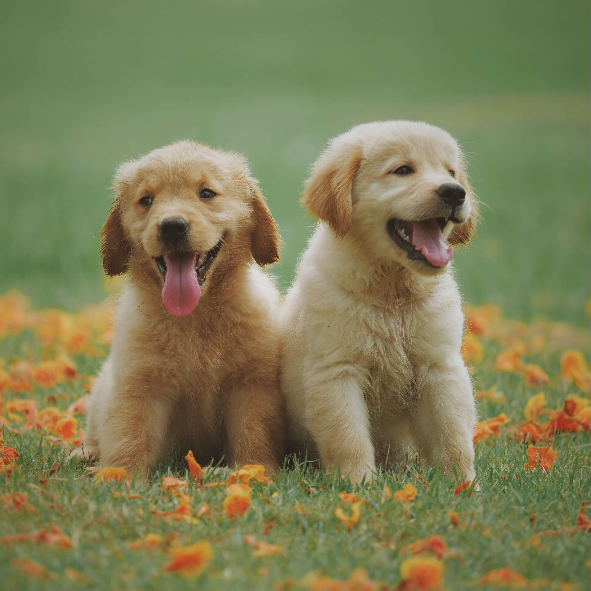
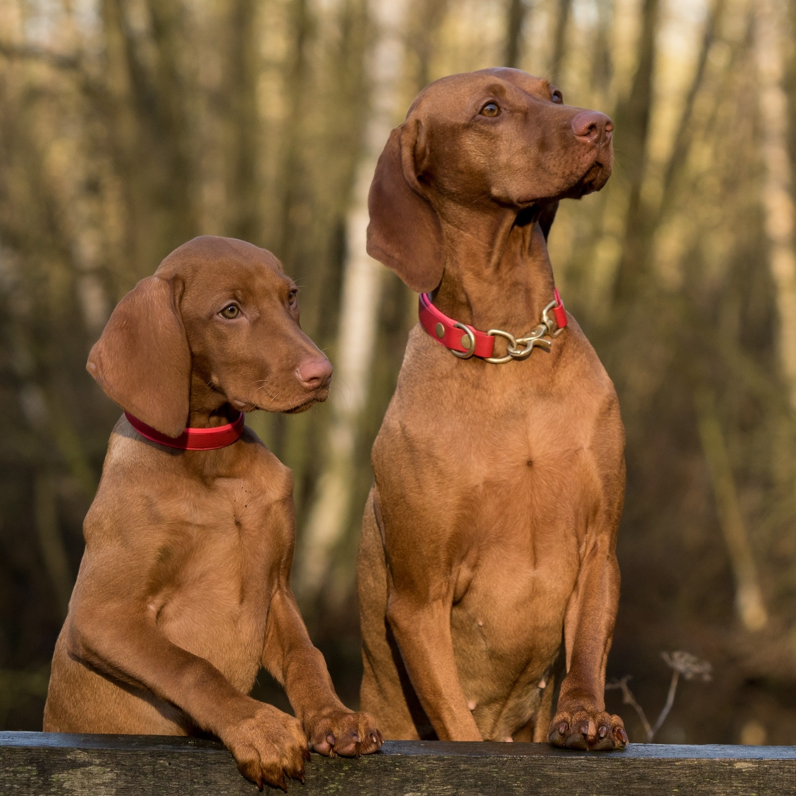

I want to adopt a dog!
Happy Dogs Home is a registered charity based in Shilton. It was founded in 2020 with the aim being to rescue and re-home unwanted and abandoned dogs.
We rescue, rehabilitate and re-home dogs to give them the better future they deserve. We provide medical care, food, shelter and love for all dogs and ultimately find them loving homes.
All our animals are health checked, inoculated & identi-chipped and leave with 4 weeks free pet insurance. Our vetinary surgeon checks, worms and inoculates all dogs and implements our rigorous neutering policy as we firmly believe this makes a happier pet.
To find out how to adopt and book in a visit please fill out our Contact Form at the bottom of our site
Benji is a stunning looking boy, he does have a bit of a sensitive side and it took him a
couple
of days to come around but once bonded he is an affectionate dog with a peaceful soul.
He did have some issues in his previous home and was a bit protective of his owner so Benji
will need ongoing work to teach him to share and cannot have children in the home.
He does have some good manners in place and have nice social skills around other dogs and
could
live with a female dog.
Contact us to find out how to adopt Benji!
Ricky is a gentle and affectionate dog who enjoys snuggling up to people for a fuss.
He is happiest when he has company so has found being in the kennel environment a bit
stressful.
Ricky is looking for a home with owners who will be home most of the day and are happy to
put in
the time and dedication in teaching him how to relax when he is left alone.
Ricky has shown some nice social skills with dogs and could possibly live with a sociable
steady
dog that could act as a good role model but also be happy to engage in some calm play
sessions.
Contact us to find out how to adopt Ricky!
Terri is an affectionate lady with a worried side who is looking for new owners with
experience
of owning anxious dogs themselves before.
A nervous lady, Terri has struggled with being handled at times, and will need a calm,
confident
approach to not put too much pressure on her while she settles. Due to her worried side, she
will need to live in an adult only home away from children, and is not necessarily a family
dog
that will enjoy a cuddle. Molly does enjoy being with her people once she has bonded, but
she
will need time to work on this in her new home. She is happy to explore on her walks, but
can be
anxious of fast movement, and noise, and so will need quiet walks - she is equally happy to
have
a snooze on her bed at home!
She would be best suited as the only dog in the home. She should be socialised regularly
with
steady walking buddies who can guide her in the right direction and help to build her
confidence, as she does not have much experience with them.
Contact us to find out how to adopt Terri!
The number one reason to adopt a dog is that you will be saving their life. Many shelters are overflowing with dogs and cats, they sometimes have to turn away animals simply because they do not have enough room. So when you adopt your dog, another one can take its place.
Dogs have a way of stealing our hearts with one look of those big brown eyes! Dogs have a way of keeping us healthy and active. If you have had a bad day, a dog can make you smile and they have been proven to reduce stress in humans.
The number one reason to adopt a dog is that you will be saving their life. Many shelters are Buying from a breeder or pet shop can cost upwards of £500-£1000. We charge only £200 for a dog that is completely up to date with vaccinations, spayed/neutered and micro-chipped.
Dogs know when they've been saved from terrible situations. Your dog will be forever grateful and offer you love even when you have a bad day, even if you cheat on him and pet another dog, and even if you accidentally yell at him for getting in the way.
Please feel free to ask us anything! We aim to resond to all enquiries within 24 hours.
*Required